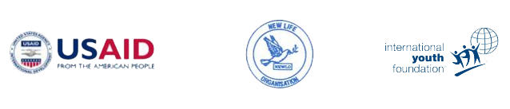

COMMENCEMENT OF THE CARIBBEAN YOUTH EMPOWERMENT PROGRAMME
The New Life Organization (NEWLO) has signed an agreement with the International Youth Foundation (IYF), based in Baltimore, USA. The project, through the Caribbean Youth Empowerment Program (CYEP), funded by the U.S. Agency for International Development (USAID), seeks to provide 180 youth at risk in Grenada with market-relevant skills and ensure that 40% of the graduates are placed in jobs. The USAID is the principal U.S. agency that provides assistance to countries recovering from disaster, trying to escape poverty, and engaging in democratic reforms.
The IYF invests in the extraordinary potential of young people. Founded in 1990, IYF builds and maintains a worldwide community of businesses, governments, and civil-society organizations committed to empowering youth to be healthy, productive, and engaged citizens. IYF programs are catalysts of change that help young people obtain a quality education, gain employability skills, make healthy choices, and improve their communities.
The IYF and the USAID launched the Caribbean Youth Empowerment Program (CYEP) in 2008 to provide vulnerable young people in Antigua and Barbuda, Grenada, Jamaica, and St. Lucia with the technical, vocational, and life skills training and job placement services they need to successfully pursue sustainable livelihoods. This $5 million program, which also offers career counseling and entrepreneurship training, targets youth ages 17 to 25 who are currently unemployed or under-employed, with particular attention to young males. A key objective of the program is to strengthen the capacity of youth-serving organizations to address the employability needs of the region’s vulnerable youth. By 2013, CYEP aims to reach 2,200 young people through appropriate training that responds to the employment needs of high growth industries such as tourism and entertainment. At least 40 percent of program participants are expected to be placed in quality jobs or to launch their own business start ups.
Over two hundred youths (200) have applied to be enrolled in the Programme. The training would be done in two phases/cycles with the first phase to train one hundred (100) youth would begin on Monday August 20th 2012 at three centres: St. Andrew’s, St. Patrick’s and St. John’s. The orientation session for the first phase/cycle takes place on Wednesday August 8th at 9:00am at the Deluxe Cinema, Grenville. During the training programme, each youth will have access to Life Skills, ICT, Remedial Education and Vocational Training, while Psycho-Social Support Services will be available on a need basis. NEWLO will use the IYF’s Life Skills curriculum, Passport to Success (PTS). This intensive life skills programme will provide trainees with the knowledge and confidence to make healthy decisions about their personal and professional lives. The youth will also have Vocational Training at Level 1 for CVQ/NVQ certification by the National Training Agency (NTA).
Ten skill areas will be offered. These include Commercial Food Preparation, Restaurant & Bar Services, Early Childhood Development, General Construction, Plumbing, Electrical Installation, Furniture Making, Geriatric Care and Cisco It Essentials.
In addition, as part of the training programme, all trainees will be placed in an internship to enable them to gain practical work experience. Job placement services will be offered to enable the participant to search and apply for jobs. In addition, some of the youth will be linked with the Ministry of Youth’s Educational Enhancement Programme to enable those who have already written CXC subjects but did not pass to have access to classes and the opportunity to re-take some of those subjects. This is aimed at helping some of the youth to further their education to higher institutions.
The CYEP Programme is being implemented in Grenada in partnership with the Grenada Industrial Development Corporation (GIDC) with NEWLO being responsible for the Vocational Training and GIDC being responsible for the Entrepreneurship component of the Programme.
CYEP CountryBrochure Grenada APRIL TO SEPTEMBER 2012 CYEP COURSE GUIDE 